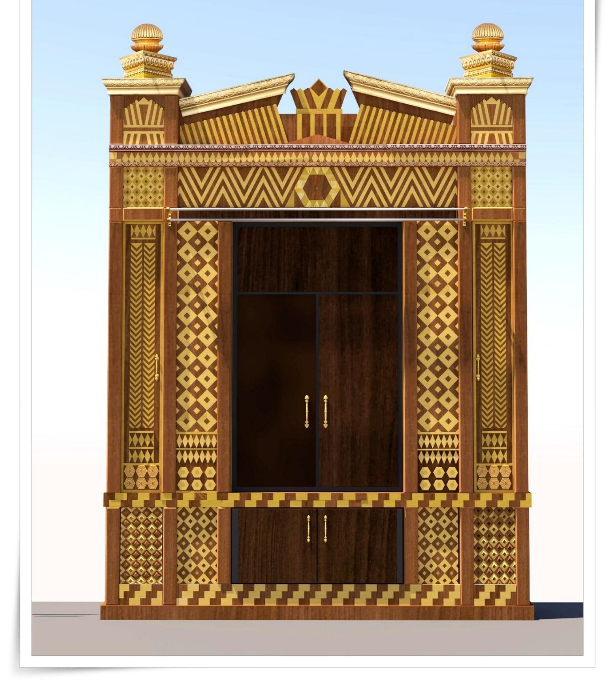
В ночь перед Рош а-Шана 1968 года несколько мужчин несли по улицам Краун-Хайтс деревянную конструкцию, подвешенную на шестах. Раввин Янкель Липскер с сыном Залманом везли Арон Кодеш к дому 770 по Истерн-Парквей — собранный по частям в подвале собственного дома Янкеля, за много бессонных ночей, без единого профессионального чертежа и на его личные деньги. К утру Арон уже стоял на месте. Ребе спросил габая: «Я знаю, что Янкель построил Арон. А откуда дерево?» Никто не знал. Янкель считал это своим личным делом.
В 2023 году Арон впервые за пятьдесят пять лет заново покрасили — первая серьёзная реставрация со дня постройки, прошедшая в месяце Хешван (см. материал Anash.org о реставрации). Примерно тогда же киевская компания AMUD Legacy Synagogue Interiors заканчивала рабочие чертежи точной копии этого же Арона — для дома Хабад в Израиле. Двадцать четыре листа. Семнадцать пронумерованных деталей. Размеры — до десятой доли миллиметра.
Два комплекта документов об одном и том же предмете. А между ними — пятьдесят лет истории столярного дела.
Что построил Янкель без единого чертежа
Арон Кодеш создал раввин Янкель Липскер в 5728 году (1968), а в 5733 году (1972) дополнил боковыми шкафами — так сложилась форма, знакомая сегодня хасидам по всему миру.
Работа шла в подвале. Янкель приносил эскизы Ребецн, и она была не сторонним зрителем, а настоящим соавтором: именно она предложила добавить корону наверху Арона. Эта корона — центральный визуальный элемент — сегодня повторяется в синагогах на пяти континентах.
Сначала Янкель хотел встроить Арон в стену, как было принято в шулах того времени. Ребе не согласился: в шуле его тестя, Ребе Раяца, было иначе. Арон остался отдельно стоящей конструкцией — и это оказалось важным для будущих копий: такой Арон можно построить где угодно и установить в любом помещении.
В 1972 году, накануне Йом Кипура, Янкель с сыновьями и несколькими бохурим пристроили боковые шкафы — новым свиткам Торы нужен был дом. Так сложилась форма, которая существует и сегодня.
Ни спецификаций. Ни файлов CAD. Только руки мастера, который знал, что делает.
Чем занимается AMUD сегодня
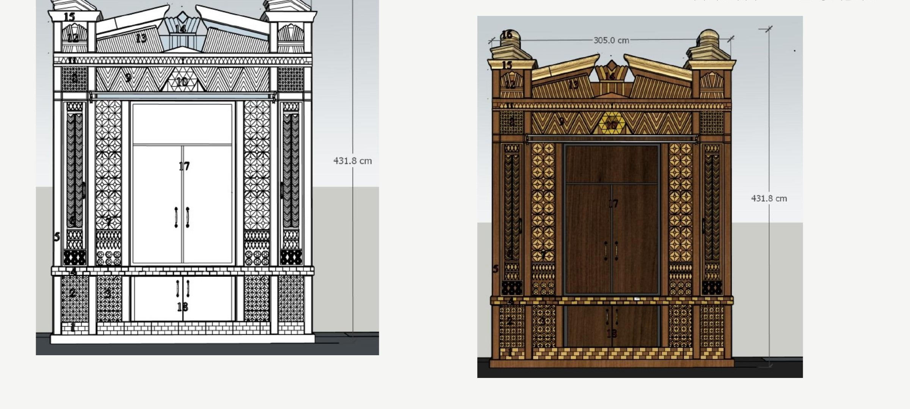
Проект начинается с общих габаритов: ширина 305 см, высота 431,8 см. От них отталкивается вся дальнейшая документация — каждый следующий лист привязан именно к этим цифрам.
Каркас (שלדת הארון) прорабатывается на отдельном листе: ширина проёма 125 см, боковые пилястры по 30 см, высота нижнего яруса 55 см, глубина цоколя 15 см. Всё с допусками, всё на координатной сетке. Это инженерная документация, по которой любая столярная мастерская сможет работать самостоятельно — в другом городе, в другой стране, с другими людьми.
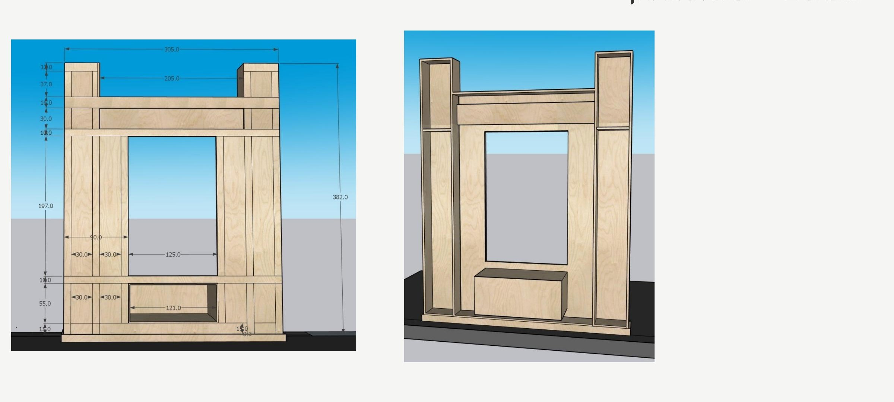
Маркетри: старая техника с новой точностью
Самый трудоёмкий элемент проекта — маркетри-панели. У Арона пять разных типов панелей, и о каждом стоит сказать отдельно.
Интарсии и маркетри — техники ещё со времён Ренессанса. Принцип один: тонкие пластины дерева разных пород и оттенков собирают в узор, а затем приклеивают на основу или собирают в самостоятельную панель. В маркетри шпон вырезают и укладывают поверх основы; в интарсии элементы врезают прямо в массив. В Ароне 770 использованы оба подхода — в зависимости от зоны.
Ромбовидный орнамент на пилястрах оригинального Арона на 770 Истерн-Парквей — вот он, каким его застали реставраторы в октябре 2023 года, — и стал основой узора, который AMUD переводит в чертежах в повторяемый модуль:
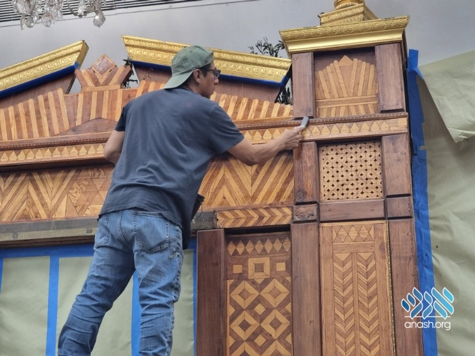
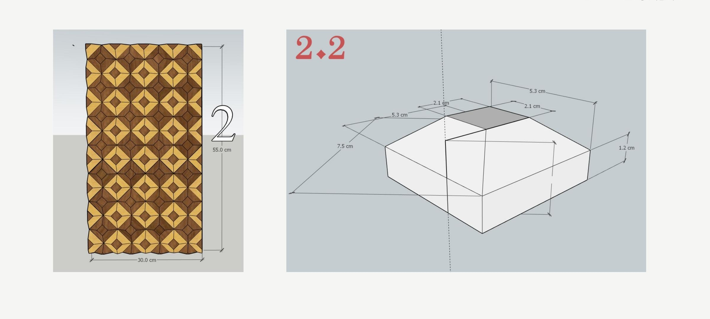
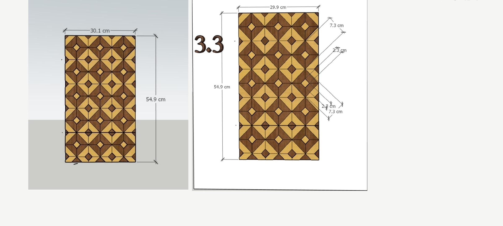
Деталь №2 — вертикальные панели пилястр с ромбовидным узором. Каждый ромб составлен из четырёх треугольных сегментов двух пород дерева — светлого клёна и тёмного ореха. Угол среза строго 45°. Ошибка в 1–2° на одном элементе через сотню повторов становится заметна невооружённым глазом — поэтому элементы режут партиями на ЧПУ-станке по одному шаблону.
Деталь №3 — более плотный узор из восьмиугольников со вставленными ромбами. Размер элемента — 7,3 × 2,3 см. При такой сложности ручная резка практически невозможна: элементы слишком мелкие, а повторов слишком много.
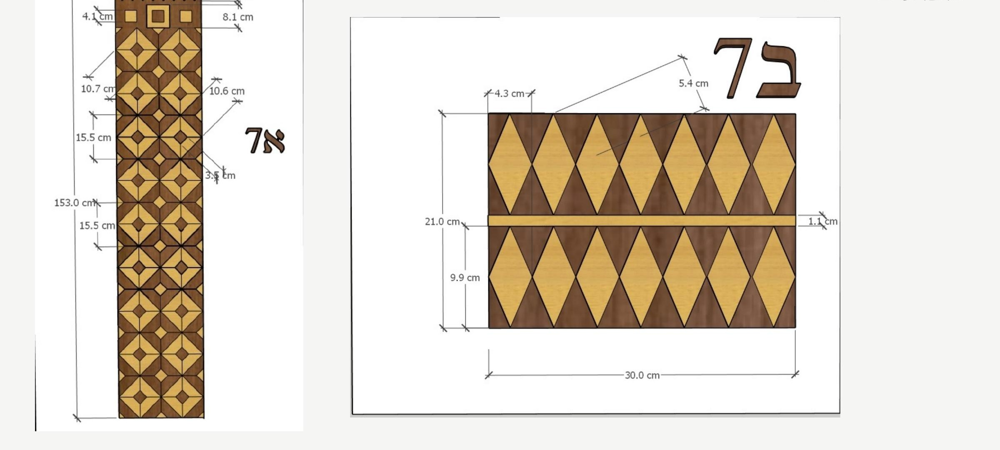
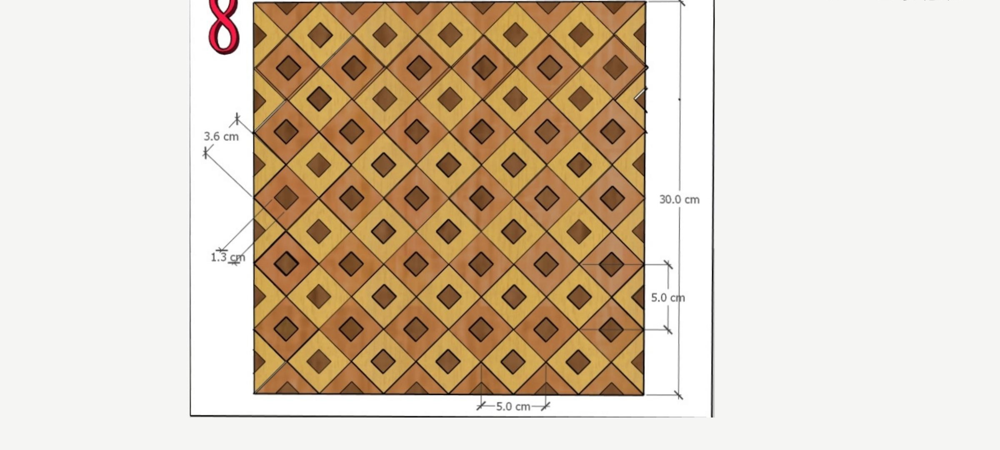
Деталь №7 — панели с крупными ромбами, разделёнными золотой нитью толщиной 1,1 мм. Эта деталь видна только вблизи, но именно она придаёт поверхности глубину и ощущение ручной работы.
Деталь №8 — квадратные панели с диагональным шахматным узором. На вид просто, но требует безупречной геометрии: любое отклонение от 45° накапливается по всей поверхности.
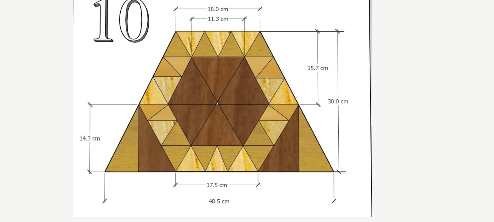
Деталь №10 — звезда Давида в центре треугольной пирамиды. Двадцать четыре треугольных сегмента на модуль, у каждого свой угол среза. Самый сложный узор во всём проекте.
Реальные сроки
Янкель Липскер строил свой Арон несколько месяцев — один, в подвале, впервые в жизни. Современное производство устроено иначе: параллельные потоки работ, отдельные участки, ЧПУ для резки шпона. Но объём работы от этого не становится меньше.
| Этап | Срок | Примечание |
|---|---|---|
| Документация и согласования | 6–8 нед. | Порода дерева, толщина шпона, отделка — все решения принимаются здесь |
| Сборка каркаса | 3–4 нед. | Высота 382 см, отправляется частями |
| Маркетри-панели | 10–14 нед. | Сушка шпона + резка на ЧПУ + сборка вручную, всего ~12–15 кв. м |
| Резные и литые элементы | 4–6 нед. | Карниз, капители, навершия — включая золочение и патинирование |
| Корона (Деталь №14) | 2–3 нед. | Ширина 76,1 см, крылья по 31,3 см, резной профиль |
| Отделка и монтаж | 3–4 нед. | Включая доставку и сборку на месте |
| ИТОГО | 6–8 месяцев | Стандартный Арон без маркетри занимает 8–12 недель. Вся разница — в инкрустации и мозаике. |
Корона и капители
Корона — центральный символический элемент Арона. Именно Ребецн предложила добавить её, когда Янкель принёс ей эскизы. В проекте AMUD это Деталь №14: ширина 76,1 см, симметричные крылья по 31,3 см с резным профилем, высота пика 23,4 см.
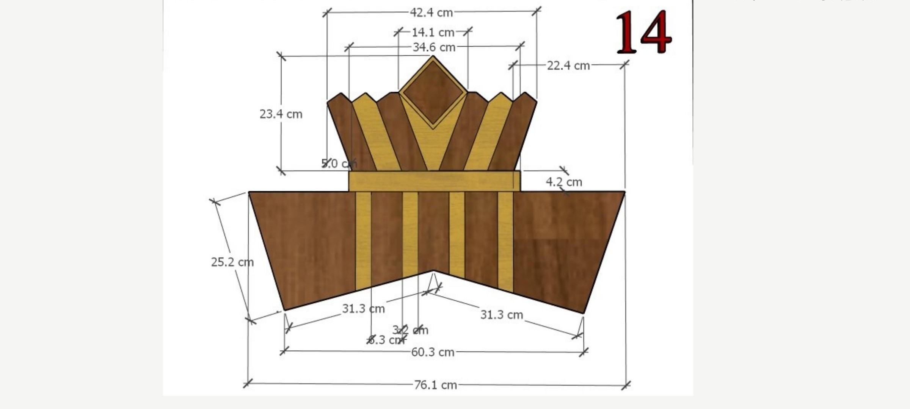
Чуть ниже капители повторяют мотив, знакомый по историческим фотографиям верхних колонн и золочёных наверший оригинала, — акантовый орнамент, увенчанный золочёным шаром, воспроизведённый как Деталь №16: капитель 23,7 × 23,7 см, диаметр шара 21,8 см.
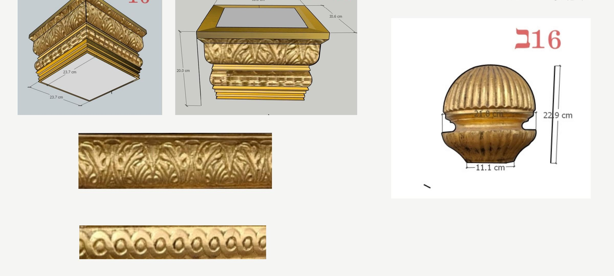
Мемориальные доски и таблички почёта от Shtern Amber
Если ваша община заказывает новый Арон Кодеш или восстанавливает тот, что достался от предыдущего поколения, Shtern Amber изготавливает мемориальные доски и таблички дарителей того же уровня мастерства. Отметьте семьи, которые помогли профинансировать проект, именной доской Yahrzeit, созданной специально для синагог.
Смотреть мемориальные доски →Фронтон
Разорванный фронтон в верхней части оригинального Арона на 770 — один из самых узнаваемых его силуэтов. Деталь №13 у AMUD воспроизводит его в полном масштабе: ширина 205,1 см, карниз 88,7 см, золочёный орнаментальный фриз по всей ширине.
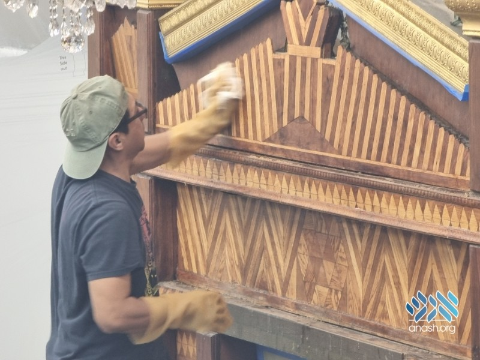
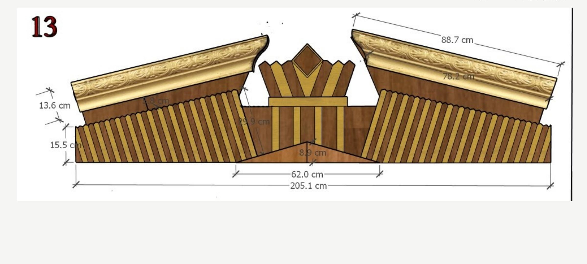
Почему это важно
Янкель Липскер не оставил после себя никакой документации. Его Арон существует в единственном экземпляре — и в памяти тех, кто видел его достаточно часто, чтобы запомнить детали. Копии делали по фотографиям, по памяти, по приблизительным замерам.
Проект AMUD — первая серьёзная попытка перевести эту реликвию на язык, понятный любой столярной мастерской в любой точке мира. Семнадцать деталей, двадцать четыре листа, размеры до десятой доли миллиметра. По объёму работы это уже не документация под разовый заказ, а полноценный архив.
Каждое поколение должно уметь построить Арон заново — теми инструментами, что у него есть. В 1968 году это были подвал и руки мастера. В октябре 2023-го, когда оригинал впервые за пятьдесят пять лет прошёл реставрацию, это были осторожные руки и память, которая передаётся десятилетиями. Сегодня это SketchUp, лазерная резка и двадцать четыре страницы PDF.
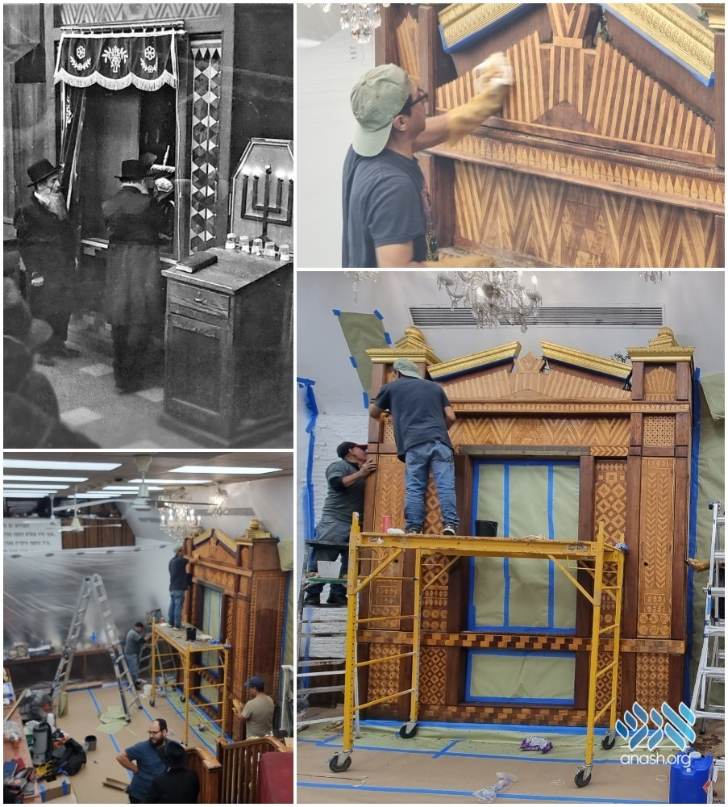
Корона — та же самая.